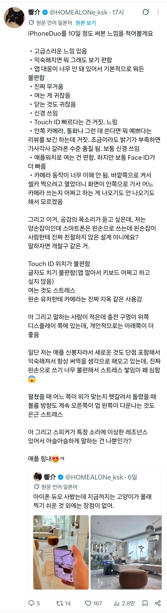
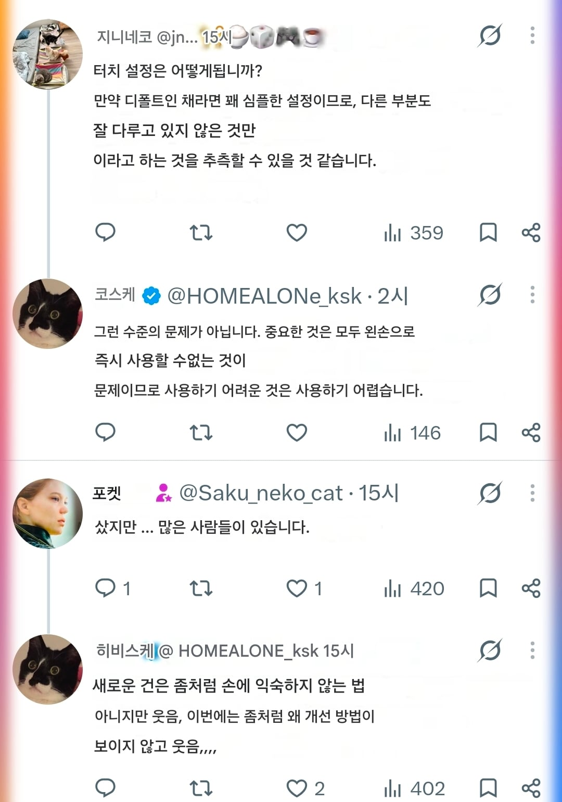
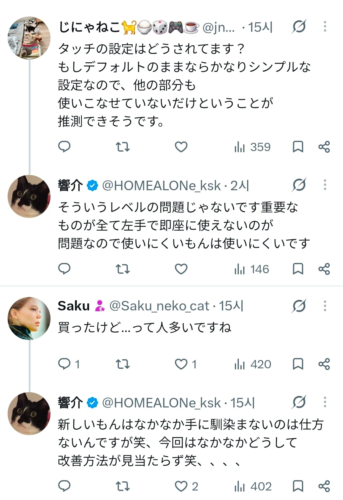

저사람은 양품 뽑았는지 힌지얘기는 없는데
무겁고 불편하다는얘기는 있네
생각해보니 왼손잡이는 불편하겠다



저사람은 양품 뽑았는지 힌지얘기는 없는데
무겁고 불편하다는얘기는 있네
생각해보니 왼손잡이는 불편하겠다
핸드폰 무게는 개인적으로 내가 남자인데도 190후반 200부터 무겁다 느껴짐
170 180대는 되어야 무난하고 150 160이면 진짜 가볍다 느끼고
그래서 220~250이런 하이엔드폰은 못쓸정도로 무게감 많이 느껴짐
폴드8 울트라 사서 쓰다가 너무무거워서 s25+로 다시 내려옴 ㅋㅋ
케이스씌우니까 290g되더라
너무 무거운 케이스 쓴거 아니냐 ㅋㅋㅋㅋ
215그램 짜리에 케이스를 75g을 씌우면 무겁지 ㅋㅋㅋㅋ
슈피겐 아머케이스 제일 잘되는거삿는데
6만원정도 했던거같음...
무게만 아니면 다시쓰고싶긴함
힌지는 부러지지않은 힌지와 부러진 힌지가 있을뿐임 힌지 설계자체가 약하게 되어있음
폴딩 핸드폰 특성상 무조건 왼손잡이는 불편하게 되어있음
그건 갤폴드도 마찬가지
근데 앞판에 C타입 단자 박아놓은건 역대급 개병신이라 생각됨
폴드4, 8 유저로써 이해가 안됨
차라리 폴드8처럼 스피커를 언밸런스하게 두는게 나았던거 아닌가
무게도 마찬가지
폴드4 쓸때 케이스까지 하면 300g이 넘어가서 고기 반 근 들고 다니는거였는데
지금 듀오가 딱 그 무게임
폴드4 2년 썼다고 오른손 새끼손가락, 손목 많이 상했는데
폴드8은 확실히 가벼워서 그런 부담은 안생기더라
폴드4 - 24울트라 - 폴드8 이렇게 넘어왔는데, 심지어 24울트라보다 가벼운게 천국임 그냥
ㅋㅋㅋㅋㅋ 고기반근 ㅋㅋㅋㅋㅋㅋㅋㅋㅋㅋㅋㅋㅋㅋㅋㅋㅋㅋㅋ
국내 대형 유튜버들 몇몇은 화면 분할 비율 설정 안 되는 거랑, 멀티창 설정 후 가로 세로 전환 시 풀리는 거 보다
폴드8 스피커 위치가 존나게 심각한 문제인 것처럼 다룬 거 보면 스피커 위치가 엄청 중요한 요소임
생각보다 유투버들 귀 좋은 사람 많나보더라
실제 사용중인데 구라 안치고
별 체감 안됨
앞판c타입은 뭐가 문제야? 몰라서물어봄
충전하면서 열면 선이 딸려감 ㅋㅋㅋㅋㅋ
듀오2 나오면 사볼까
오늘새벽 애플 컨콜에서
존 터너스가 아이폰 듀오의 결함은 ‘극히 일부’라고 발표함ㅋㅋㅋㅋ
어이가 없더라
힌지문제는 차기작에서 개선된다쳐도 우측에 UI 넣어서 답답하게 화면보게하는 건 답없더라
커버화면에서 내부화면으로 넘어가는게 연속성을 띄는 느낌이 아니라 커버화면으로 쓸 때는 스마트폰
내부화면으로 쓸 때는 아이패드의 느낌이 나야하는거 아닌가? 그래야 펼치는 맛도 나고
전환되는 맛이 나지. 난 크기만 커지는 폰을 가지고 싶었던게 아니라 들고 다니는 폰 + 아이패드가 필요했던거라고
아니 지금까지 아이패드로 썼던 UI 그냥 쓰면 되잖아 괜히 이상한 블러링 효과 넣고 옆에 UI 추가한다고
일정도 못맞춰서 앱들 최적화도 안돼있고 개극혐임
11일차 후기: 드디어 저도 화면이 박살났어요
원래 아이폰이 접근성 옵션은 최고였는데 접근성마저도 ㅈ박았네
250그람이면 프맥 케이스 없는거랑 같음.
꽤무거움
갬성값
이거 ㄹㅇ 왼손학살자임
츠-카(일본어로)
폰은 한손으로 사용할 일이 많기도 하니깐 진짜 200g이 마지노선이라 생각함
프맥충으로써 무게는 단련되서 ㄱㅊ은데
충전똥꼬 위치가좀;;
충전구 위치는 좋다고 빨아주는애들 몇 없더라 ㅋㅋ 아예 언급 안하던가
좀 다른 얘긴데…
번역기능 개쩔긴 한다
마지막에 와서야 이게 그록으로 자동번역된 글인 것을 깨달았음;
그건그래
그록이 못잡는 애들은 구글번역으로 캡쳐함
가짜기술:칩이 어떻고 카메라가 어떤...
진짜기술: 무게 20g 줄였습니다ㅎㅎ
애플스토어가서 만져봤는데 존나 무겁긴하더라..
프로맥스 주력으로 단련된사람 아니면 진짜 무리가겠더라고
지문 불편하긴 함.
페이스 아이디보다 한단계 더거쳐야해서 어떻게해도 불편 한듯
예쁘긴해 지금버전은 쓰기 싫어서 그렇지
힌지야 지금 당장은 소수의 사람들 문제지만
다른 볼륨버튼이나 지문인식 앱최적화 글래스 카메라위치 등등
덕지덕지 만들어놓은 완성도 낮은 폰이라는 생각이 드네
디테일의 애플 어디간겨!!!